Compliance Dashboard
Description
This dashboard is designed to provide users with intelligence around compliance levels within the organisation.
Allocation
This dashboard is available to the following URPs:
XXX Administrator Self Service (Payroll Approvals Not Required)
XXX Administrator Self Service (Payroll Approvals Required)
XXX Career Management
XXX BI Administration
XXX HR Administration
XXX HR Administration (With RA)
XXX HR Management
XXX Learning Administration
XXX Manager Self Service (Payroll Approvals Not Required)
XXX Manager Self Service (Payroll Approvals Required)
XXX Supervisor Self Service
XXX Supervisor Self Service (Limited Access)
Index
Description
Compliance reports are available in four different categories below:
-
Summary
-
Competency Analysis
-
Competency Matching
-
Competency Requirements
From this tab users can click on links provided to navigate to reports.
Example Screenshot
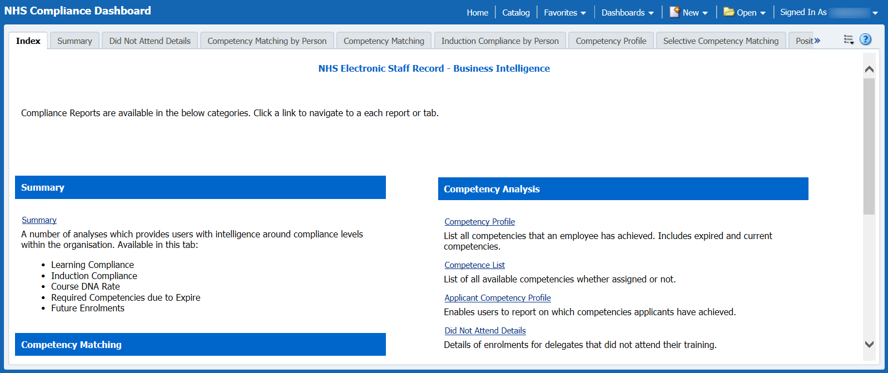
Overview Tab
Prompts
Organisation(s)
Person Type(s) (Default: Employee, Employee and Applicant)
Employee Person Type
Assignment Category
Assignment Number
Assignment Status
Staff Group
Primary Assignment Only
Organisation Level 1-13
Employee Location
Job Role
Supplementary Role
Learning Compliance
Description
This analysis is designed to show the number of competencies obtained as a percentage of those required grouped by Staff Group, Competency Name or Organisation Level 1-13. Please note that this analysis uses complex calculations and therefore may take longer to run than other analyses. Limiting the analysis to specific frameworks may increase the speed of the analysis. Users have the option to exclude Open Ended Sickness Absence (Long Term) based on the Absence Start Date.
Prompts
Competency Framework(s) (Default: MAND,LOCAL,KSF,LANG)
Competency (Default All)
Effective Date
Exclude Open Sickness Absence - Start Date
Employee Hire Date
Essential
Data Items
| Title | Description |
|---|---|
| Staff Group | Staff Group linked to Job in Position |
| Assignment Count | Count of Distinct Assignment Number |
| Competencies Required | The number of competencies required for each position |
| Competencies Achieved | The number of competencies that are:
|
| Compliance % | Competencies Achieved / Competencies Required * 100 |
| Competence Name | |
| Competence Name with Essential Flag | |
| Organisation Level 1-13 | |
| Employee Location |
Filters
Include required competencies only.
Where multiple achievements of the same competency have been recorded, retrieve only the latest.
Include requirements where the required start date is less than or equal to the current date.
Include requirements where the required end date is greater than or equal to the current date or is null.
- *
Example Screenshot
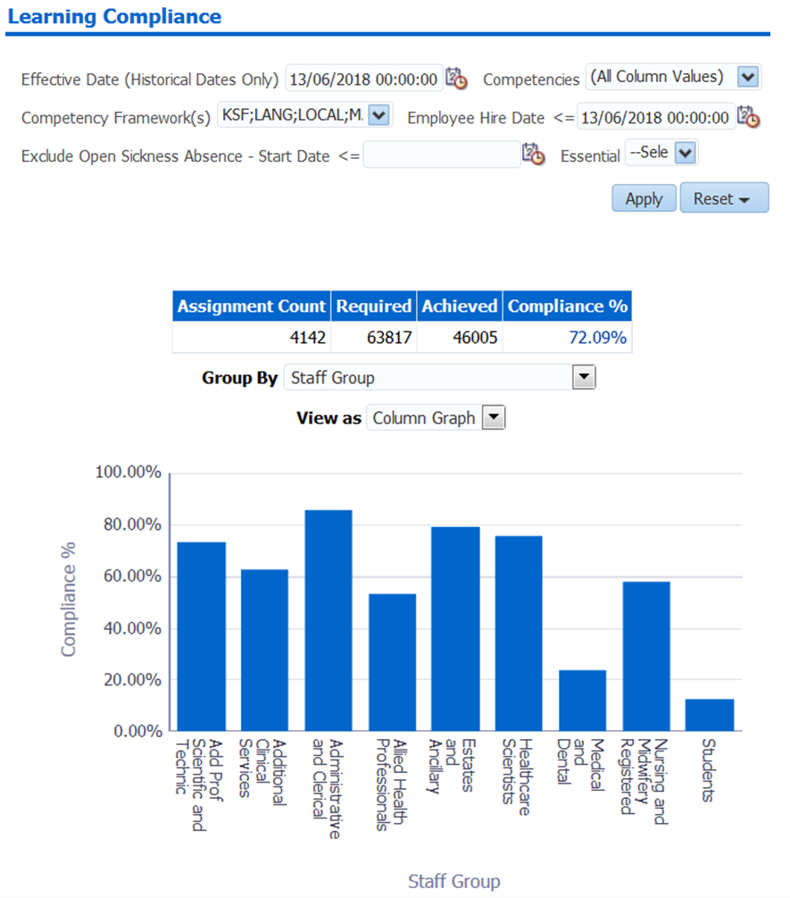
Actions
Click -> Navigate to Learning Compliance by Person
Induction Compliance
Description
The Induction Compliance analysis enables a user to select a number of competencies from a list of competency requirements, the start date the analysis should begin from and the number of months an employee should have achieved the competency based on their latest start date. The analysis provides two percentages:
•'Req. Compliance %'. This is the number of competencies required out of the competencies selected in the list that employees have achieved.
•'Full Compl %'. This is the number of assignments that have achieved all of the competencies selected that they require.
Prompts
*Induction Competencies
Within ‘x’ months (Default: 6)
Hire Date >= (Default: Today – 12 months)
*Framework
*Include Requirements? (Yes/No)
Data Items
| Title | Description |
|---|---|
| Assignments | Number of Assignments |
| Full Compliance | Number of assignments that have achieved all required competencies selected |
| Full Compliance % | 100* (Number of assignments that have achieved all required competencies selected)/(Number of assignments) |
| Required Competencies | Number of Competencies Required |
| Required Competencies Achieved | Competencies Achieved |
| Compliance % | 100 * (Competencies Achieved)/(Competencies Required) |
Example Screenshot
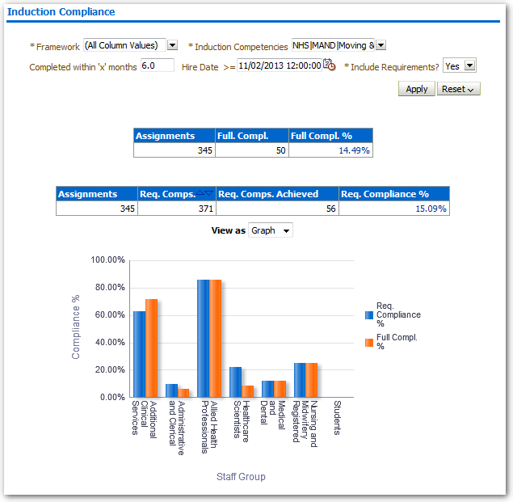
Actions
Click -> Navigate to Induction Compliance by Person
Required Competencies due to Expire
Description
This analysis is designed to show users a list of competencies against staff that are required and are due to expire within the next month.
Data Items
| Last Name | Competence |
|---|---|
| First Name | Expiry Date |
| Title | Future Enrolment Date |
| Organisation |
Filters
Include required competencies only.
Sort by Expiry Date Ascending, then by Surname, First name.
Example Screenshot
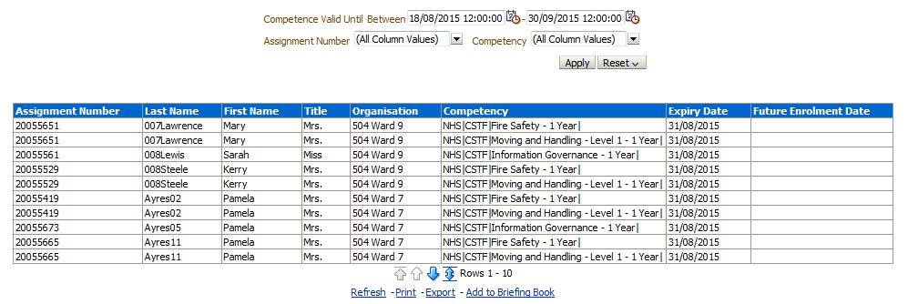
Course DNA Rate
Description
This analysis is designed to show the DNA rate of staff in the organisation on a number of courses.
Data Items
| Title | Description |
|---|---|
| Staff Group | Staff group associated with the job role in position |
| Course Name | Name of the course |
| Enrolment Count | Number of Enrolments excluding Enrolment Status = ‘Withdrawn’ |
| DNA Count | Number of enrolments with status of ‘Did Not Attend’ |
Prompts
Class Date Between (Default between first day of month 3 months ago, and last day of last month)
DNA Rate Limit % (Default 5)
Filters
Include non-“Online e-Learning” only.
Include enrolments where class start date is between the from and to date Prompts.
Column Selectors
Group by Course or Staff Group (Default: Staff Group).
View Selectors
View as Pie Graph, Bar Graph, Column Graph or Table (Default: Column Graph).
Formatting
Red flag or change colour to red when DNA rate is above the rate set in Prompts.
Example Screenshot
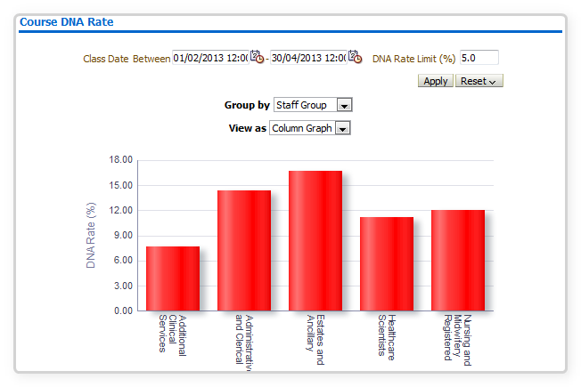
Future Enrolments
Description
This analysis is designed to show a list of enrolments on future classes either for all staff, or for the staff included in the supervisor hierarchy if accessed via SSHR.
Prompts
Class Start Date Between
Data Items
| Course Name |
|---|
| Class Start Date |
| Employee Name |
Filters
Restrict to classes occurring within the next month (prompt is available to update this).
DNA Detail Tab
Description
This tab is designed to give the details of each enrolment to the user. By default the data is restricted to ‘DNA’ enrolments only, however users can change this using the prompt provided.
Prompts
Starting Organisation
Class Date Between
Enrolment Status
Person Type
Employee Person Type(s)
Staff Group
Job Role
Supplementary Role
Data Items
| Employee Number | Organisation |
|---|---|
| Course Name | Organisation Level 1-13 |
| First Name | Supervisor Name |
| Last Name | Supervisor Email Address |
| Class Start Date | Employee Email Address |
| Class End Date | Staff Group |
| Enrolment Status | Position Title |
Competency Matching by Person Tab
Description
This analysis is designed to show the number of competency requirements that are applicable to each person against the number of competencies each person has achieved, with a percentage. Users have the option to exclude Open Ended Sickness Absence (Long Term) based on the Absence Start Date.
Prompts
Organisation
Job Role
Competency Framework
Competency
Effective Date
Assignment Number
Effective Date
Exclude Open Sickness Absence - Start Date
Employee Hire Date
Supplementary Role
Employee Location
Column Selectors
Organisation Level 1-13 (X 4)
Staff Group
Occupation Code
Pay Scale
Position Title
Data Items
| Title | Description |
|---|---|
| Staff Group | |
| Employee Number | |
| Assignment Number | |
| Employee Name | |
| Assignment Number | |
| Required | Number of competency requirements applicable |
| Achieved | Number of competencies achieved with the correct level |
| Compliance % | Achieved / Required * 100 |
| Organisation Level (1-13) |
Example Screenshot
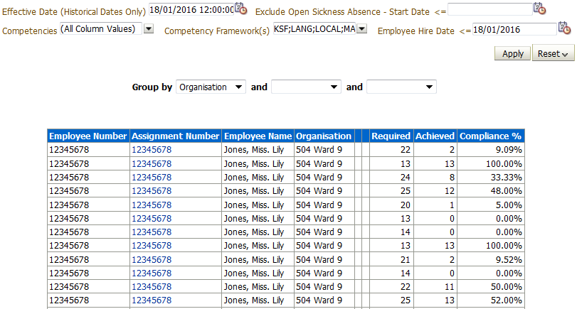
Actions
Click Assignment Number -> Navigate to Competency Matching
Competency Matching Tab
Competency Matching
Description
This analysis is designed to show the detail of matching competency requirements against the competencies a person has achieved.
Prompts
Organisation
Job Role
Competency Framework
Competency
Effective Date
Assignment Number
Employee Number
Employee Location
Display Requirement Source?
Employee Hire Date
Area of Work
Supplementary Role
Data Items
| Title | Description |
|---|---|
| Employee Number | |
| Assignment Number | |
| Employee Name | |
| Email Address | |
| Supervisor Name | |
| Supervisor Email Address | |
| Organisation Level 1-13 | |
| Position Title | |
| Position Name | |
| Competency Name | |
| Level Required | Low Level Rating on Competency Requirements form |
| Competency Match | If the person has achieved the competency at the correct level (or the level is null) then show a green cell with ‘Match’. If the person has achieved it but at a lower level, then leave the cell red with ‘Lower Level’. Otherwise the cell is red. |
| Expiry Date | Expiry date of the competency if they have it – whether it is current or expired. |
| Requirement Inherited From | Where the requirement was inherited from. If this is null, the requirement was set against the position. |
| Future Enrolment Date | |
| Date Last Awarded | |
| Area of Work | |
| Staff Group | |
| Employee Location | |
| Pay Grade |
Column Selector
Organisation Level 1-13 (X4)
Position Title
Position Name
Occupation Code
Job Role
Example Screenshot
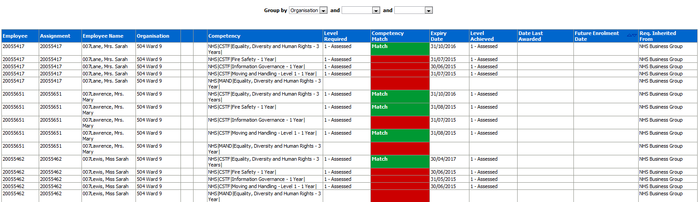
Non-Required Competencies
Description
This analysis is designed to return all non-required competencies against all assignments. Alternatively the Compliance Matrix can be used however it is designed to run for specific competencies only as opposed to this analysis which return all non-required competencies per assignment.
Data Items
| Title | Description |
|---|---|
| Employee | |
| Employee Name | |
| Supervisor Name | |
| Supervisor Email Address | |
| Competency | |
| Expiry Date | Expiry date of the competency if they have it – whether it is current or expired. |
| Competency Match | Only Non-Requirement Competency shown |
| Level Achieved | |
| Date Last Awarded | |
| Assignment | |
| Organisation Name | |
| Competence Date From |
Example Screenshot
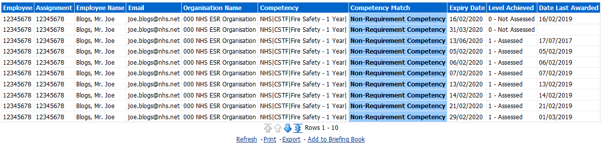
Induction Compliance by Person Tab
Description
The Induction Compliance analysis enables the user to select a number of competencies from a list of competency requirements, the start date the analysis should begin from and the number of months an employee should have achieved the competency by based on their latest start date.
Prompts
*Induction Competencies
Staff Group
Job Role
Within ‘x’ months (Default: 6)
Hire Date >= (Default: Today – 12 months)
*Framework
*Include Requirements? (Yes/No)
Data Items
| Employee Number | Competencies Required |
|---|---|
| Last Name | Achieved |
| First Name | Staff Group |
| Title | Hire Date |
| Organisation | Assignment Number |
| Competencies Achieved | Compliance % |
Example Screenshot
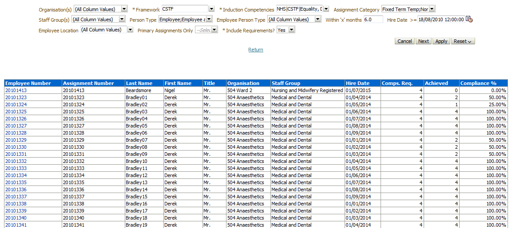
Competency Profile Tab
Description
This analysis is designed to list all competencies that an employee has achieved. It includes expired and current competencies.
Prompts
Organisation(s)
Staff Group(s)
Assignment Category
Person Type(s)
Employee Person Type(s)
Assignment Status
Occupation Code
Job Role
Primary Assignments Only
Assignment Number
Supplementary Role
Employee Location
Employee Number
Employee Name
Competence Framework
Competency
* Effective Date (Historical Dates Only)
Active Competencies Only? (default: No)
Column Selectors
Org Level 1-13 x 4
Staff Group
Job Role
Data Items
| Employee Number | Awarded By Title |
|---|---|
| Assignment Number | Competency |
| Last Name | Level Achieved |
| First Name | Date From |
| Title | Date To |
| Position | Organisation |
| Latest Start Date | Last Updated By |
| Date Last Awarded | Awarded By |
| Org Level 1-13 | Supervisor Name |
| Employee Email Address | Supervisor Email Address |
Example Screenshot
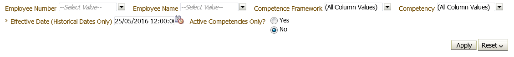
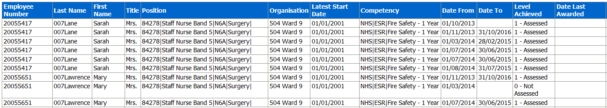
Selective Competency Matching Tab
Selective Competency Matching Summary
Description
This analysis is designed to allow the user to select a number of competencies and return a grouping percentage where each competency has been achieved. Where the Based on Requirements prompt has been set to ‘Yes’, a percentage based on requirements is returned. Where it has been set to ‘No’, an Overall Percentage is returned.
Prompts
Competencies
Number of Days to Define Expiring Soon (Days)
Based on Requirements? (default: Yes)
Data Items
| Organisation Level 1-13 | |
|---|---|
| Competency Percentage | |
| Supervisor |
Example Screenshot
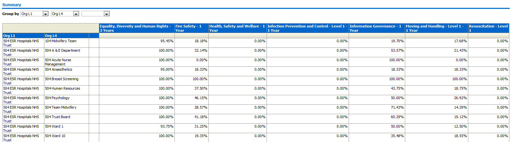
Selective Competency Matching Detail
Description
This analysis is designed to allow the user to select a number of competencies and return employee details where each competency is either Not Required (grey cell), Required, Expiring Soon (including expiry date) or a Match (to competency requirements). A RAG status is assigned to the cell colour of the results. The Future Enrolment Date is included against each result where populated.
Prompts
Organisation(s)
Staff Group(s)
Assignment Category
Person Type(s)
Employee Person Type(s)
Assignment Status
Position Title
Occupation Code
Job Role
Primary Assignments Only
Assignment Number
Supplementary Role
Exclude Open Ended Absence - Start Date <=
Employee Number
Employee Name Competencies
Competency Framework
Number of Days to Define Expiring Soon (Days)
Based on Requirements? (default: Yes)
Effective Date (default: Current Date)
Employee Hire Date <= (Excludes Employees where Latest Start Date is Greater than the date entered)
Data Items
| Title | Description |
|---|---|
| Assignment Number | |
| Employee Name | |
| Position Title | |
| Organisation Level 1-13 | |
| Supervisor | |
| Competency Match? | Title of the Competency selected and match status. |
| Expiry Date | Included when result is Match or Expiring Soon |
| Future Enrolment Date | Included where populated |
| Position Number | |
| Hire Date | |
| Staff Group | |
| Assignment Status | |
| FTE | |
| Assignment Category | |
| Role | |
| Email Address | |
| Pay Step Date | |
| Employee Location | |
| Assignment Category | |
| Pay Scale |
Conditional Formatting
RAG Status is set against the results cells. The Amber (Expiring Soon) results can be set using the Number of Days to Define Expiring Soon (Days) Prompt.
Example Screenshot

Position Competency Requirements Tab
Description
The analysis returns a detail view of all positions and the competency requirements set against them. It allows users to filter for specific positions, competencies and competency frameworks.
Prompts
Effective Date
Position Number
Occupation Code
Area Of Work
Competence Full Name
Competence Framework
Level Inherited From
Hiring Status
Role
Data Items
| Position Name | Position Number |
|---|---|
| Area of Work | Occupation Code |
| Competence Full Name | Competence Framework |
| Competence Date From | Competence Date To |
| Low Rating | High Rating |
| Essential | Inherited From |
| Level Inherited From | Role |
| Staff Group | Organisation |
| Pay Grade | Organisation Level 1-13 |
| Hiring Status |
View Selector
View (Requirements by Position/Requirements Only)
Example Screenshot

Competency Requirements Matrix Tab
Description
The analysis returns a list of positions showing where each position has or does not have the competency set as a requirement.
Prompts
Effective Date
Position Number
Occupation Code
Area Of Work
* Competence Full Name
Competence Framework
Level Inherited From
Role
Hiring Status
Data Items
| Organisation | Area Of Work |
|---|---|
| Position Number | Occupation Code |
| Position Name | Job |
Example Screenshot

Positions Without Requirements Tab
Description
This analysis returns all positions that do not have a competency or a selection of competencies set as requirements against them (or higher levels) or a selection of competencies set as requirements where some have additional requirements set but not all. The analysis also allows users to filter for specific competencies, organisation, job role or staff group.
Prompts
Mode
Competence(s)
Organisation
Job Role
Staff Group
Effective Date
Data Items
| Organisation | Position Number |
|---|---|
| Staff Group | Position Title |
| Role | Date From |
| Hiring Status | Organisation Level 1-13 |
Example Screenshot
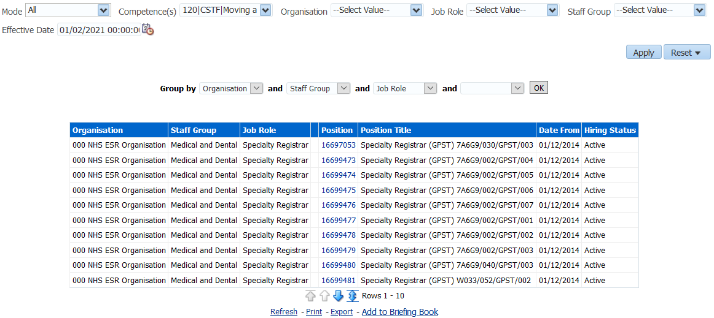
Actions
Click -> Position Number to navigate to Position Competency Requirements
Competence List Tab
Description
This analysis is designed to return a list of all available competencies whether assigned or not.
Prompts
Trust Identifier
Framework
Family Group
Competence Name
Data Items
| Trust Identifier | Proficiency Rating Scale |
|---|---|
| Competence Framework | Certification Required |
| Competence Name | Primary Evaluation Method |
| Family Group | Renewal Period |
| Competence Description | Renewal Period Units |
| Valid Date From | Behavioural Indicator |
| Valid Date To |
Example Screenshot

Applicant Competency Profile Tab
Description
This analysis enables users to report on which competencies applicants have achieved.
Prompts
Applicant Number
* Application Status
Staff Group
Person Type
Effective Date (Historical Only) (Default: Current Date)
Data Items
| Applicant Number | Date From |
|---|---|
| Applicant Name | Date To |
| Organisation | Proficiency Level |
| Position Title | Date Last Awarded |
| Staff Group | Awarded By |
| Assignment Last Updated Date | Title |
| Competency |
Example Screenshot
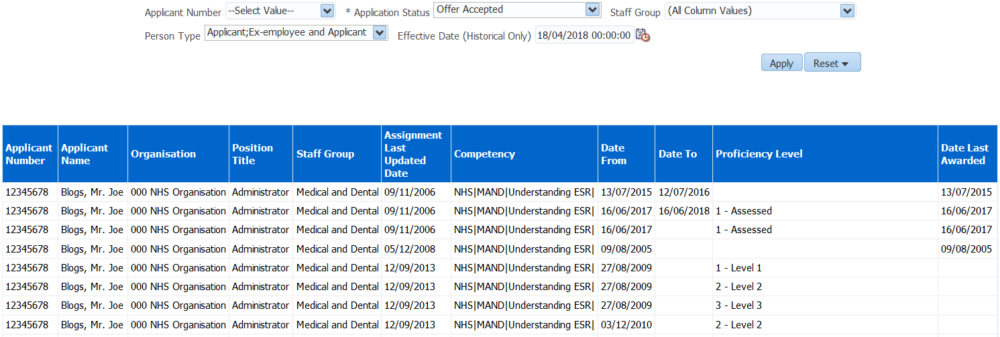
Compliance Matrix Tab
Description
This Compliance Matrix analysis is similar to the Selective Competency Matching analysis but allows users to include Non-Requirement Competencies (Blue cell) and the ability to see when the person’s competency expired, if they are no longer in date. The Compliance Matrix also has separate columns for future booking dates and expiry dates.
Prompts
Organisation(s)
Staff Group(s)
Assignment Category
Person Type(s)
Employee Person Type(s)
Assignment Status
Occupation Code
Role
Primary Assignments Only
Assignment Number
Effective Date
Latest Start Date >=
* Competencies
Data Items
| Employee Name | Job Role |
|---|---|
| Assignment Number | Occ Code |
| Position | Assignment Status |
| Organisation | Competency Full Name |
| Organisation Level 1-13 | Matching Status |
| FTE | Competence Date To |
| Staff Group | Future Enrolment Date |
| Employee Latest Start Date | Supervisor Name |
| Employee Email Address | Supervisor Email Address |
Example Screenshot
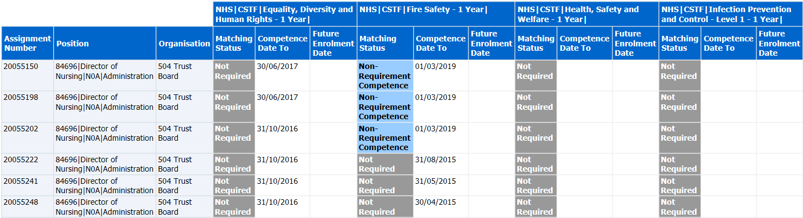
Applicant Competency Matching Tab
Description
This analysis is designed to show the detail of matching competency requirements against the competencies an applicant has achieved. The analysis is similar to the employee compliance matching analysis but filters to persons with an ‘Applicant Flag’ only.
Prompts
Competencies
Competency Framework(s)
Effective Date (Historical Dates Only)
Display Requirement Source? (Default: Yes)
Data Items
| Title | Description |
|---|---|
| Applicant Number | |
| Employee Number | |
| Applicant Name | |
| Person Type | |
| Application Status | |
| Email Address | |
| Organisation Name | |
| Competency Name | |
| Level Required | |
| Competency Match | If the applicant has achieved the competency at the correct level (or the level is null) then show a green cell with ‘Match’. If the applicant has achieved it but at a lower level, then leave the cell red with ‘Lower Level’. Otherwise the cell is red. |
| Expiry Date | Expiry date of the competency if they have it – whether it is current or expired. |
| Level Achieved | |
| Date Last Awarded | |
| Future Enrolment Date | |
| Requirement Inherited From |
Column Selector
Organisation Level 1-13
Area of Work
Staff Group
Employee Location
Pay Grade
Position Title
Position Name
Occupation Code
Example Screenshot
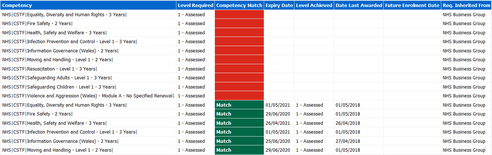
Benchmarking
Description
This tab returns Competency Matching % benchmarking figures at Trust, Region, Country and National levels, which can be compared against figures at Manager / Team level.
Calculations
Benchmarking Competency Matching %:
Benchmarking Competencies Achieved (All) / Benchmarking Competencies Required (All) *100
Non-Benchmarking Competency Matching %:
Competencies Achieved (All) / Competencies Required (All) *100
Note: The data returned is effective as at the last day of the previous month in line with Benchmarking data refresh cycle. For example if the report is run in February, the data returned is effective as at the end of January.
Prompts
Staff Group
Area of Work
Job Role
Occupation Code (Initial)
Employee Person Type
Assignment Category
Assignment Status
Month
Column Selectors (Detail Views only)
Staff Group
Job Role
Area of Work
Employee Category
Assignment Category
Summary
Description
This analysis provides a summary view of Competency Matching % benchmarking figures at Trust, Region, Country and National levels, which can be compared against figures at Manager / Team level.
Data Items
| Title | Description |
|---|---|
| Month | |
| Team | Competency Matching % at Manager / Team level (Supervisor hierarchy apply) |
| Trust | Competency Matching % at Trust level |
| Region | Competency Matching % at Region level |
| Country | Competency Matching % at Country level |
| National | Competency Matching % at National level |
View Selectors
View as Graph by Level, Graph by Month or Table (Default Graph by Level)
Example Screenshot
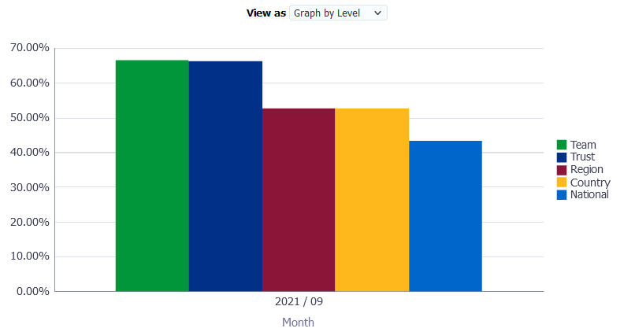
Benchmarking Detail
Description
This analysis provides a detail view of Competency Matching % benchmarking figures at Trust, Region, Country and National levels, which can be compared against figures at Manager / Team level using the Non-Benchmarking Detail analysis available within the page.
Data Items
| Title | Description |
|---|---|
| Month | |
| Trust | Competency Matching % at Trust level |
| Region | Competency Matching % at Region level |
| Country | Competency Matching % at Country level |
| National | Competency Matching % at National level |
Example Screenshot
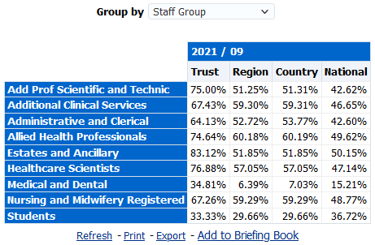
Non-Benchmarking Detail
Description
This analysis provides a detail view of Competency Matching % benchmarking figures at Manager / Team level, which can be compared against figures at Trust, Region, Country and National levels using the Benchmarking Detail analysis available within the page.
Data Items
| Title | Description |
|---|---|
| Month | |
| Team | Competency Matching % at Manager / Team level (Supervisor hierarchy apply) |
Example Screenshot
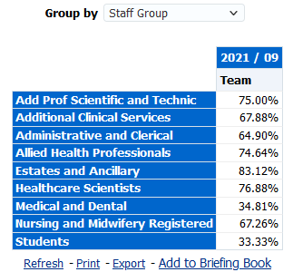